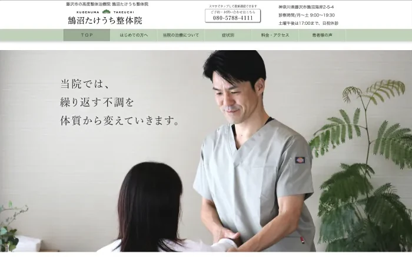
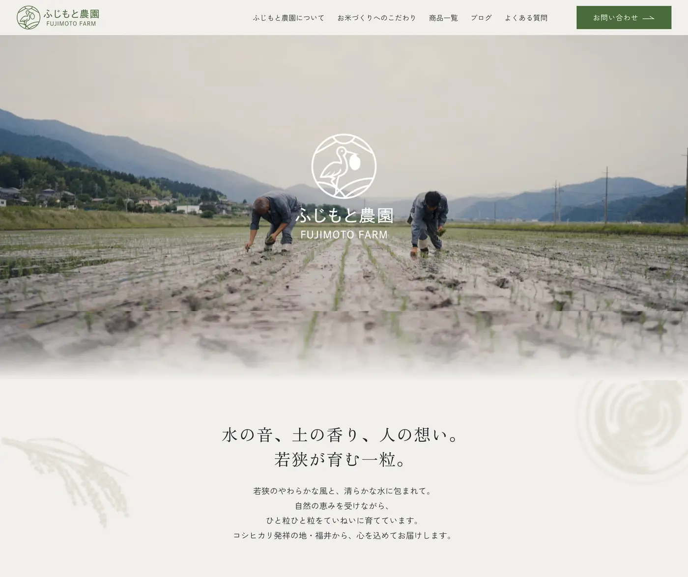
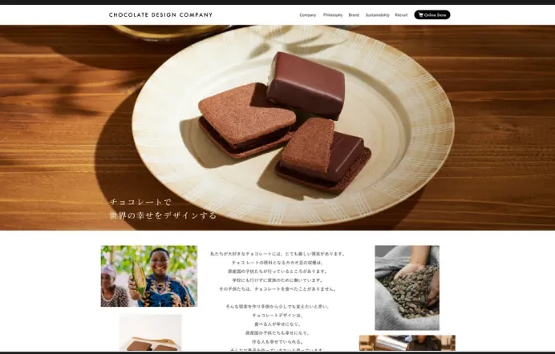
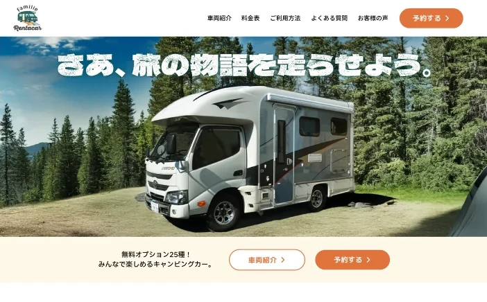

製造業向け BtoB SaaS
図面から部品表（BOM）を取り込む業務を AI で自動化するプロダクト
- 担当範囲
- 要件整理・情報設計・画面設計・インタラクティブプロトタイプ・デザインシステム構築
AI の出力を「下書き」として提示し、人の確認を設計に組み込みました。開発中のため、詳細と画面は非公開です。
各案件の担当範囲を明記しています。
現在進行中｜UI/UX・業務システム
いずれも守秘のため画面を掲載していません。設計の判断は現在の領域にまとめています。
図面から部品表（BOM）を取り込む業務を AI で自動化するプロダクト
AI の出力を「下書き」として提示し、人の確認を設計に組み込みました。開発中のため、詳細と画面は非公開です。
患者と薬剤師、性質の違う2種類のユーザーが使うアプリ
患者側は記録の負荷を下げることだけを優先し、薬剤師側は実測値と予測値の境界が一目で分かることをグラフ設計の第一要件に置きました。リリース済みですが、登録ユーザー限定のため画面は非掲載です。
在庫から発注までを一元化する業務システム
短時間での操作を前提とした画面構成と、視認性・操作性の最適化を担当しています。
Web サイト
採用導線の改善を軸にした UI 設計

来院前の不安を減らす導線設計
初めて来院する人が最初に知りたいのは、どんな人が施術するのかという点です。院長の情報、症状別の入口、患者の声をトップに集め、予約の連絡先を常時表示しました。

注文導線と運用の改善
情報設計とライティングに加えて、販売管理システムの導入を支援しました。受注から管理までの業務を、運用チームが継続して回せる状態に整えています。

世界観と企業価値の両立
チョコレートデザイン株式会社（VANILLABEANS）のブランドサイトと公式 EC のリニューアルを推進しました。商品の魅力だけでなく、カカオ農園支援を含む事業の姿勢が同じ導線の中で伝わる構成にしています。
上記4本とは性質が異なるため、別枠として置いています。

キャンピングカーレンタルの予約サイト
ロゴの制作から画面の設計、実装までを通して担当した案件です。
自主制作